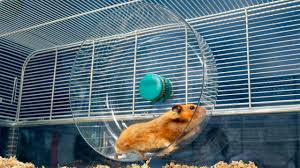

At PurrPets, we advocate for a minimum of 450-600 square inches of unbroken floor space. Forget the colorful plastic tubes; your hamster wants a mansion, not a maze!

| Feature | The PurrPets Standard | Why? |
|---|---|---|
| Floor Space | 450+ sq inches (unbroken). | Hamsters run miles every night; they need room to roam! |
| Bedding Depth | 6 - 10 inches deep. | Hamsters are natural burrowers. They need to dig tunnels! |
| The Wheel | 8-12 inches (Upright). | Small wheels cause permanent spinal damage. |
| Ventilation | Mesh lids or bars. | Ammonia from bedding can cause respiratory infections. |
Many commercial cages are far too small and encourage bar-biting. At PurrPets, we recommend "Bin Cages" (large plastic storage bins with mesh lids) or "IKEA Detolf" conversions. They are cheaper and much healthier for your pet!
Since hamsters are nocturnal, their wheel is their treadmill. Ensure the wheel has a solid surface (no wire mesh, which causes "bumblefoot") and is large enough that the hamster's back is perfectly flat while running. If their back curves like a "C," the wheel is too small!